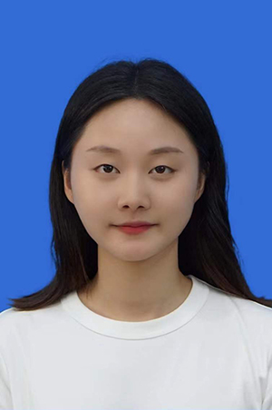

|
DataAnalyst——免费、便捷式医学大数据和人工智能分析平台 |
| 主页 | 基础统计分析 | 数据挖掘与机器学习 | 团队简介 | 联系我们 |
| 课题组PI |
|
欢迎医学科研人员和相关企业与我们课题组开展深入合作！ |
| 课题组研究生 |
 |
 |
 |
 | |||||||
| 乔亚南，2019 级硕士研究生，以第一作者在Gerontology等期刊发表SCI论文3篇，并获得国家奖学金 | 陆燕强，2020级硕士研究生，以第一/共一作者在BMC medicine等期刊发表SCI论文3篇 | 李国琛，2020级硕士研究生，以第一/共一作者在Chest等期刊发表SCI论文3篇 | 吴陆颖，2021级硕士研究生 | 邵丽萍，2021级硕士研究生 |
苏州大学 公共卫生学院 柯朝甫课题组 Email：cfke@suda.edu.cn 地址：中国 江苏省苏州市工业园区仁爱路199号401楼 |